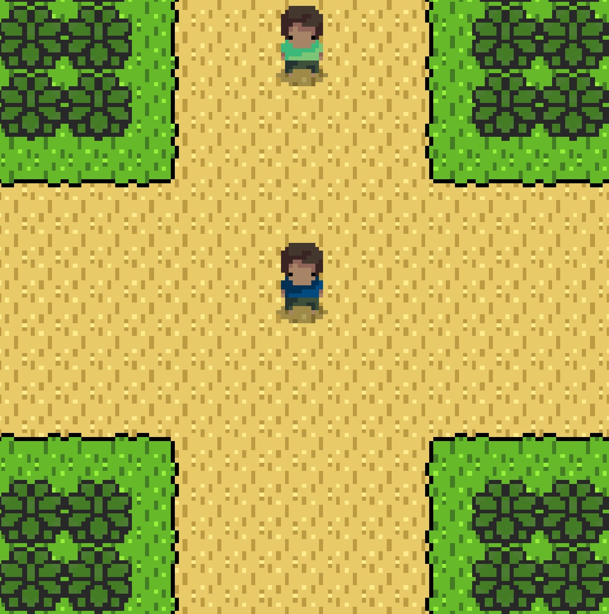
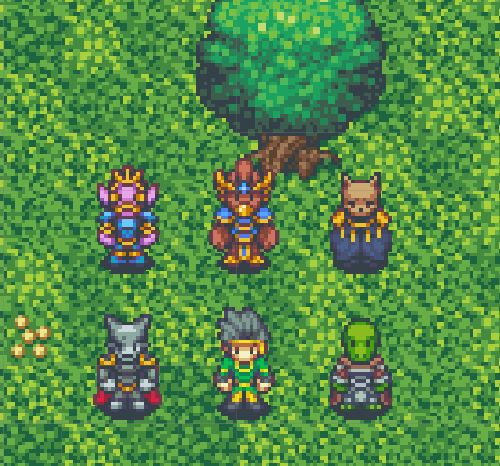

About me
TBA>> My projects <<

A small 2D hack-and-slash game developed way back in 2017 when I had little to no experience in coding.
Created with Game Maker Studio 2.

A small 2D turn-based RPG game developed between 2020 and 2021 using C# and Unity.
A C# WinForms application that can be used to load more instances of the game Flyff Universe.
 A C# library that helps on reading XLSX files.
A C# library that helps on reading XLSX files.
 A C# library that helps on reading or creating a CSV file.
A C# library that helps on reading or creating a CSV file.
Socials
TBA